Olá, eu sou a Geane
Estudante de Análise de Sistemas & Tech Enthusiast
Seja bem-vindo(a) ao meu jardim digital!
Com uma bagagem sólida como profissional da área de TI, continuo a dedicar meus estudos à Tecnolgia, também estudo Psicanálise.
Sou apaixonada por Python, JavaScript, entusiasta do mundo Linux e adoro criar soluções inteligentes.
Aqui compartilho um pouco das minhas paixões: desde meus códigos e laboratórios de redes até meus desenhos, minhas fotografias.
Fotofrafia é uma arte da qual gosto muito também, especialmente fotografia de natureza e objetos.
livros favoritos e minhas experiências culinárias.Meus Interesses e Projetos

Natureza & Cultivo
Assim como no código, a jardinagem exige paciência e dedicação. Aqui está minha Rosa do Deserto, gosto muito desta foto.
Minha Coleção
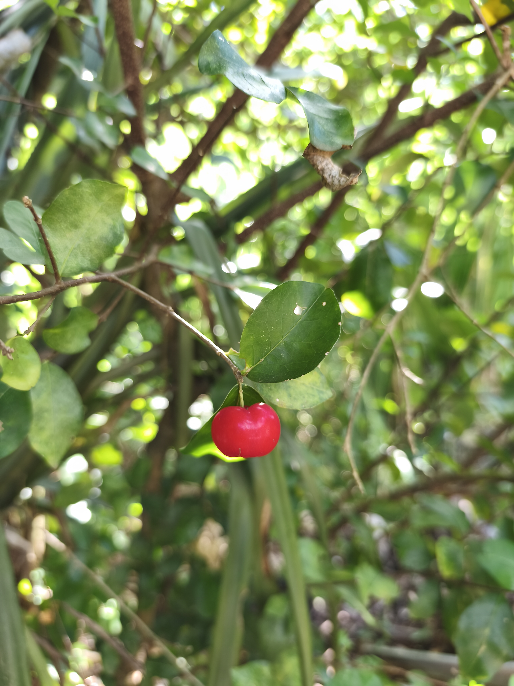
Acerola
Pequena, vermelha e cheia de vitamina C. Uma delícia no preparo de suco cheinho de vitaminas e muito agradável ao paladar. O pé de acerola crese muito, é uma árvore bonita que produz muitos galhos, geralemte bem finos, porém é uma planta de baixa manutenção, ela não necessita receber muita água e requer minímos cuidados.
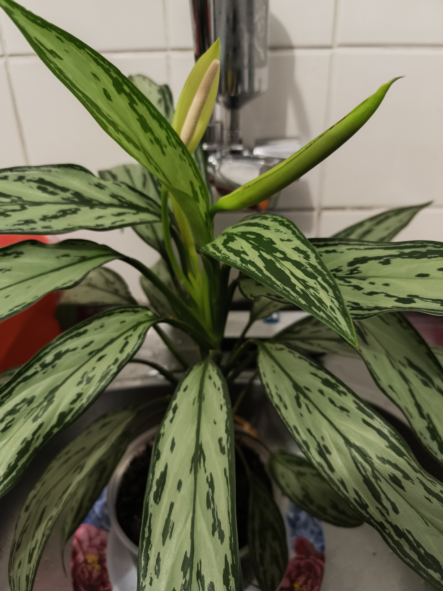
Aglaonema
Também conhecida como Café-de-salão ou Chinese Evergreen. É uma planta ornamental popular, valorizada por suas folhas largas e estampadas. A Aglaomena é uma planta típica de vaso, ela consegue sobressair dentro de casa tomando luz do sol e ela gosta de água algumas vezes por semana, ela tem um bom crescimento e sobressai fácil. Vale mencionar que ela a Aglaomena torna o ambiente bem mais agradável.
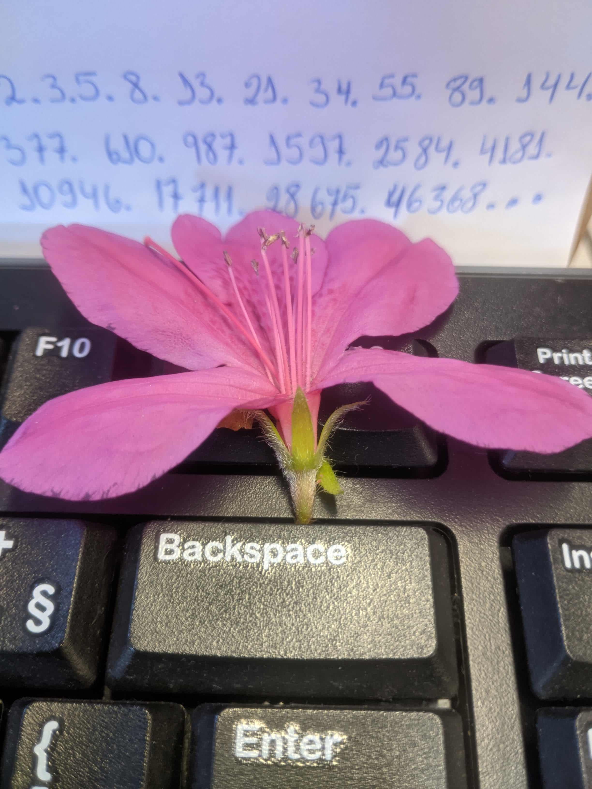
Azaleia
Aqui há uma mistura de duas coisas que adoro, flor e fotografia, a flor de Azaleia foi encontrada caída embaixo da árvore, então a levei para a mesa de trabalho e a fotografei e entra mais uma paixão, o teclado do computador que me remete á tecnologia. Mesmo que a imagem esteja em modo blur, os números são parte da Sequência de Fibonacci.
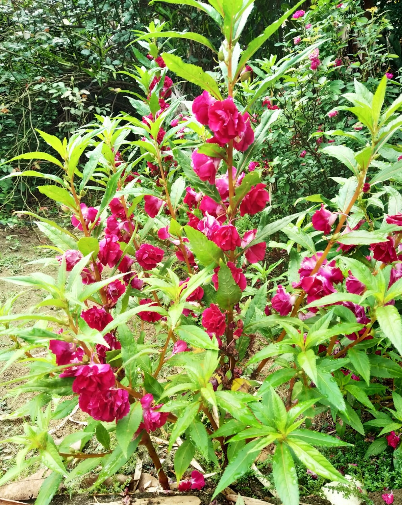
Balsamina
A Balsamina é uma flor muito delicada e muito linda também. Ela gosta bastante de água, aliás, ela cresce e prospera bem em lugares onde sempre há água. A Balsamina não economiza na hora de florecer, é como se ela gritasse: Olhe para mim, estou florindo muito e quero ser admirada!
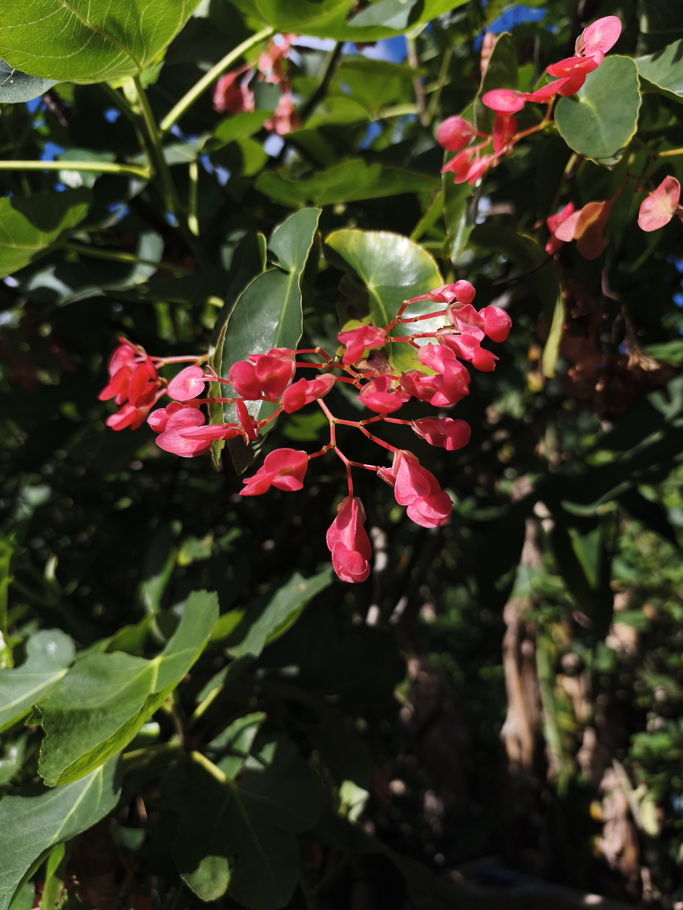
Begônia
A Begônia é bem delicada, até mesmo nas folhas, ele cresce bastante, chegando a se tornar uma árvore alta, é muito bonita ao ficar completamente florida.
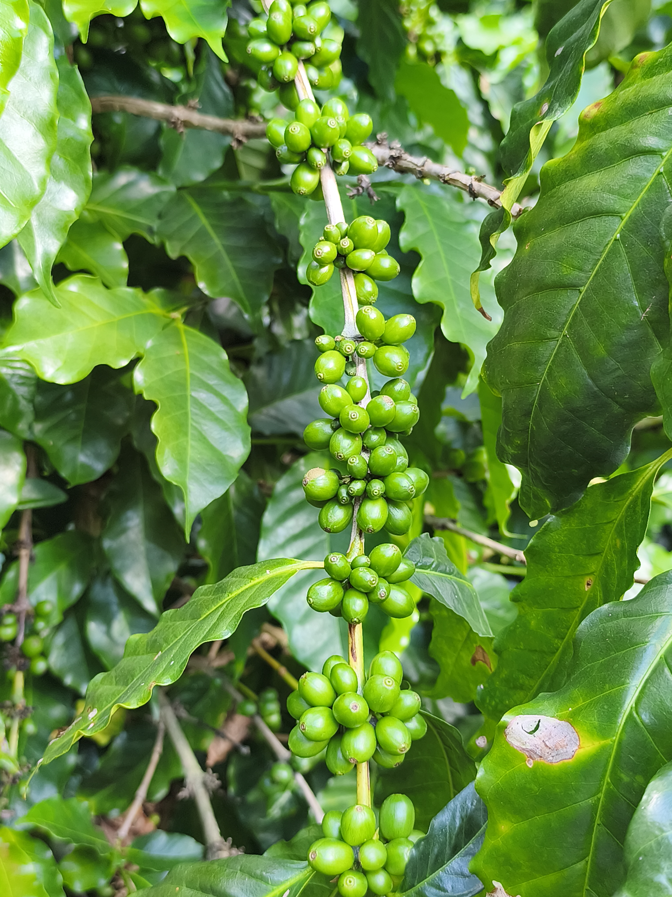
Café
Do plantio à xícara: nada supera o aroma de café fresco. Os grãos são lindos para fotografia, especialmente pela manhã após armazenar gotículas de sereno noturno. No quintal da casa de minha mãe, são cultivados muitos pés de café, na época da colheita, ela colhe os grçaos maduros, coloca para secar e depois realiza todo o processo de limpeza, torra e moagem e coa um café deliciosa todas as manhças.
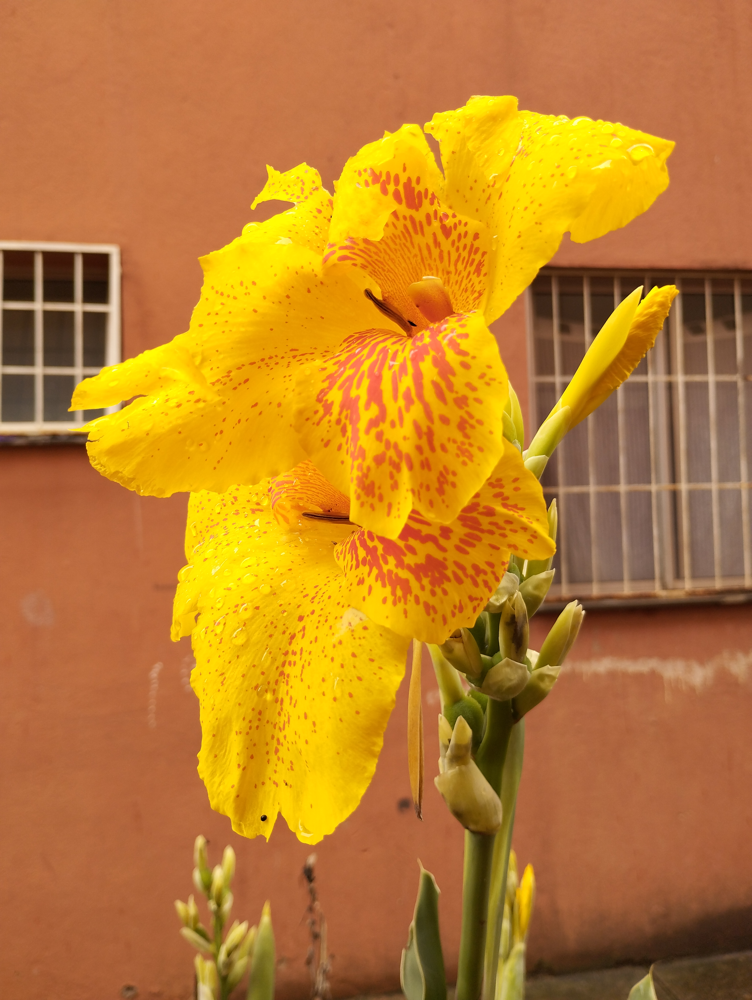
Cana Da India
A flor Cana da Índia cresce bastante e tem uma folhagem bonita o ano inteiro, mas quando floresce, ela traz uma beleza notável. Geralemte floresce na época de chuva como fim/início de ano. É uma ótima planta para ter-se do lado de fora da casa.
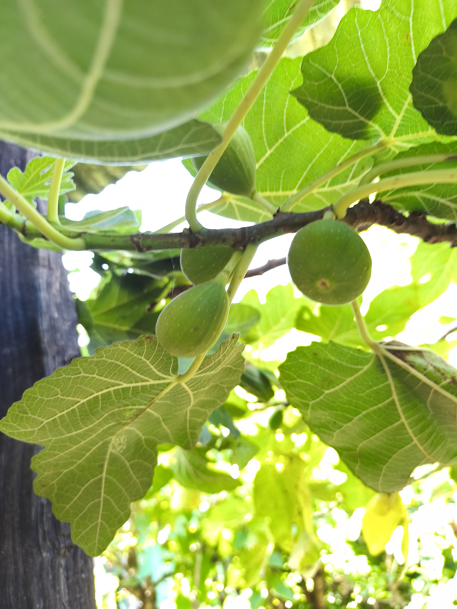
Figo
Uma fruta exótica e saborosa que, costumeiramente é usada para fazer doce em calda. A árvore do Figo cresce muito tanto para verticalmente como horizontamente, deve-se observar onde pode plantá-la. Possí uma golhagem com uma colocarção verde muito bonita.
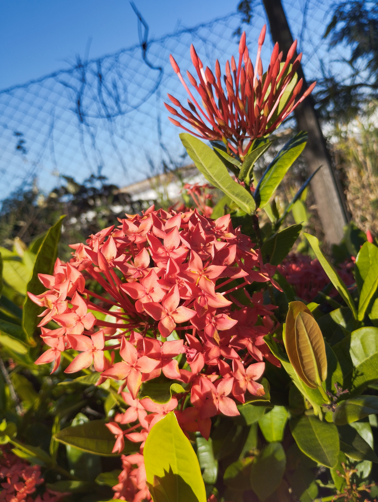
Ixora
A Ixora é uma planta originária do continente asiático. Possui flores em formato de estrela, que podem ser vermelhas, laranjas, rosas ou amarelas. Suas folhas são verde-escuras e brilhantes, ela adiciona um toque exuberante a jardins tropicais.
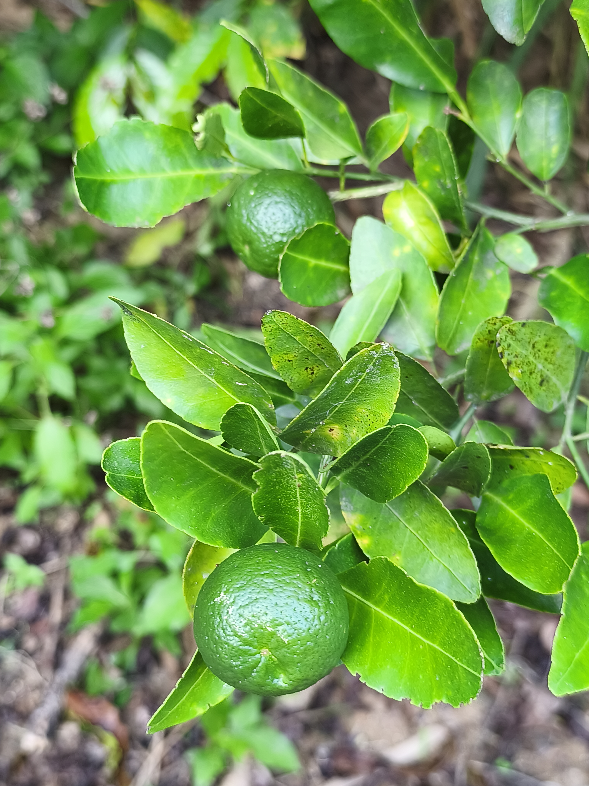
Limão
Uma fruta que provê um suco delicioso, refrescante, saudável e bom para o estômago. Também usado para temperos e coquetéis.
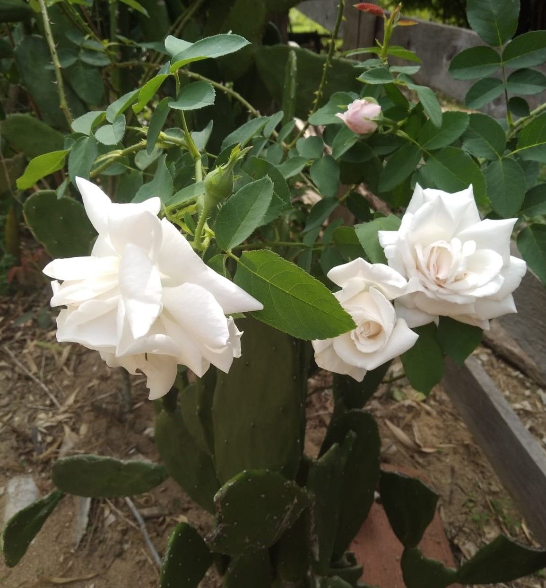
RosaBranca
A Rosa Branca é uma magestade. Absolutamente linda e com um aroma delicioso, traz beleza e um ar de pureza onde quer que floresça, também costuma crescer muito, mas seu caule não costuma crescer muito verticalmente, ela pode "deitar" os galhos que contém espinhos, para os lados. Sua beleza, certamente, lembra a inocência e pureza.
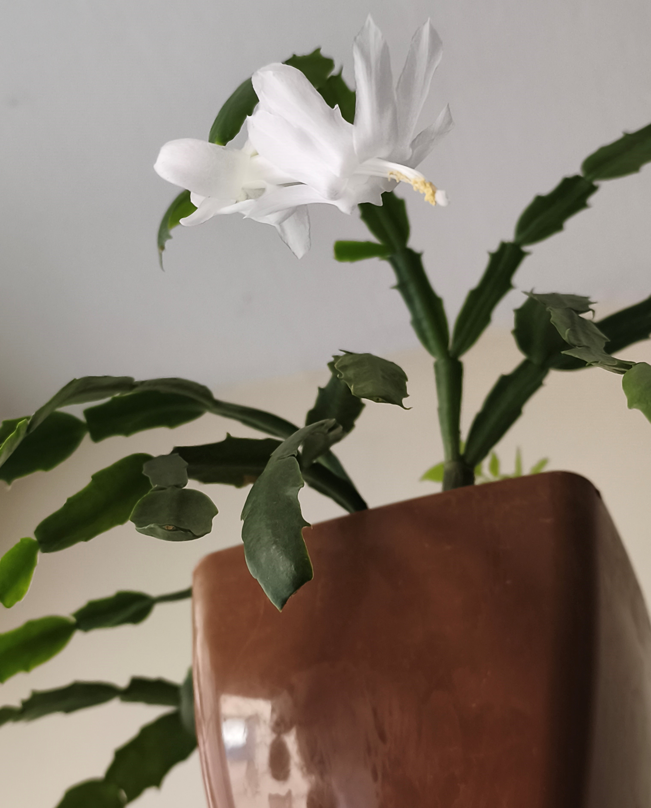
Flor de Seda Branca
Esta planta é da família do cacto de Natal, ou Schlumbergera truncata, conhecido por suas belas flores que geralmente florescem do meio ao final do ano.Ela é conhecida por Flor de Seda, esta é da variedade Branca, precisa de águas poucas vezes por semana, não é muito exigente com a terra e não pode pegar muito sol, ela sobressai bem dentro de casa apenas ficando exposta à luz. A beleza é delicadeza desta flor é incrível.
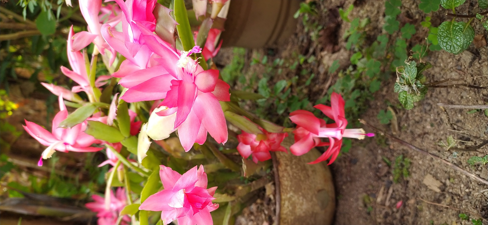
Flor de Seda Cor de Rosa
Esta planta é da família do cacto de Natal, ou Schlumbergera truncata, conhecido por suas belas flores que geralmente florescem do meio ao final do ano.Ela é conhecida por Flor de Seda, esta é da variedade Cor de Rosa, precisa de águas poucas vezes por semana, não é muito exigente com a terra e não pode pegar muito sol, ela sobressai bem dentro de casa apenas ficando exposta à luz. A beleza é delicadeza desta flor é incrível, ela é tão perfeita que dá vontade de plastificar para ter o ano todo sua beleza.
Jornada Tech
Explorando o ecossistema Linux e desenvolvendo scripts em Python. A automação e a linha de comando são meus novos superpoderes.
Arte & Cultura
Quando não estou estudando, eu assisto séries, filmes, também faço desenhos, gosto de ler um bom livro.
Quando estou estudando eu gosto de ouvir música, eu tenho algumas playlist criadas pelo YouTube que começa com alguma música do Tree Days Grace. A banda que mais ouvi em 2024 e 2025. A língua sido minha segunda língua, eu uso o dia inteiro no trabalho e lazer.